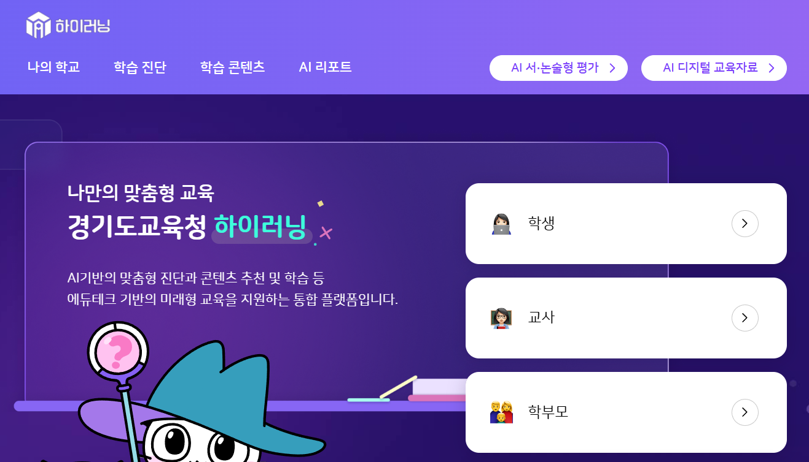

안녕하세요,
이용현입니다.
Backend
Developer.
Java Spring Framework 기반의 백엔드 개발자로, 국제 아동후원단체 한국컴패션에서 웹/앱 플랫폼 및 LMS 시스템을 개발·운영하고 있습니다. 안정적인 시스템 설계와 꼼꼼한 디버깅을 중시합니다.
3+
Years Experience
29
Countries Served
∞
Lines of Code
public class Developer {
private String name = "이용현";
private String role = "Backend Dev";
private String company = "한국컴패션";
String[] skills = {
"Java", "Spring",
"JS", "MSSQL"
};
}
기술 스택
현업에서 사용한 기술들입니다.
Frontend
Backend
DB & Tools
주요 프로젝트
개발 및 운영에 참여한 프로젝트들입니다.

경기도교육청 하이러닝
교육지원 통합 플랫폼
고도화 및 유지보수
경기도교육청(KT) · 2023.11 ~ 2024.12
Batch 프로세스를 활용한 대용량 데이터 기반 학습자 랭킹 시스템 구축 및 고도화
학습 보상 및 학생 감정 상태 분석을 위한 학습경영도구 로직 개발
Spring AOP 기반 선언적 트랜잭션 관리를 통한 콘텐츠 공유 기능 및 로직 고도화
Session 검증 및 RSA 비대칭키 암호화를 적용하여 파라미터 변조 방지 및 인프라 보안 강화
SIGNAL 분석 및 쿼리 튜닝을 통한 DB Lock 현상 해소 및 시스템 안정화
Campus LMS 시스템
교육 관리 시스템 개발. 레슨별 차별화 기능, 교사 성장 노트, 학습 리포트 등 교육 플랫폼 전반 개발 및 SQL 최적화.
AI 편지 작성 기능
키워드 선택 기반 AI 자동 편지 생성 및 다국어 번역 기능 구현. 관리자 대시보드 및 로그 보안 마스킹 시스템 개발.
사이드 프로젝트
개인적으로 진행한 다양한 사이드 프로젝트들입니다.
점심해적단
직장인들을 위한 점심 메뉴 추천 및 맛집 공유 서비스. 위치 기반 주변 맛집 탐색 및 팀원 간 투표 기능 구현.
단백질 체크
운동인을 위한 하루 단백질 및 영양소 섭취량 기록 애플리케이션. 식단 분석 및 목표 달성률 시각화 대시보드.
메신저 협업툴
팀원 간 실시간 소통과 업무 관리를 위한 협업 커스텀 메신저. 채널 기반 채팅, 파일 공유 및 시스템 알림 구현.
경력
프로덕트 매니저 (기획/마케팅 · 주임)
에이투인터내셔널
2019.07 ~ 2022.03 (2년 9개월)
-
웹사이트 및 디자인: 홈페이지 UI/UX 기획 및 HTML/CSS/JS 활용 기능 개선, 상업용/이벤트 디자인 제작
-
마케팅 및 영업: SEO 최적화 및 광고/SNS 운영, 온·오프라인 입점 제안 및 60여 개 상품 전시/판매 관리
-
기획 및 소싱: 시장 동향 분석 리포트 작성 및 최적 제품 발굴/소싱, 데이터 기반 매출 및 수익 분석
풀스택 / 백엔드 개발자
퍼닌 (Funin)
2023.11 ~ 재직중 ()
-
유지보수 (Troubleshooting & Optimization): 데드락(Deadlock) 등 시스템 시그널을 통한 오류 추적 및 수정, 쿼리 최적화를 통한 성능 병목 구간 발굴 및 개선
-
서비스 고도화: 레거시 코드 리팩토링 및 아키텍처 재검토를 통해 서비스 안정성 강화, 신규 비즈니스 요구사항에 대응하는 기능 고도화 구현
-
인프라 및 배포 파이프라인 관리: 무중단 배포 환경 구축 및 클라우드 인프라(AWS 등) 리소스 최적화를 통한 효율적인 서버 운영 환경 세팅